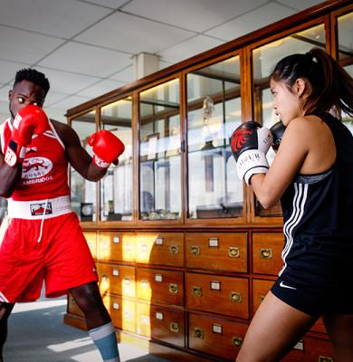
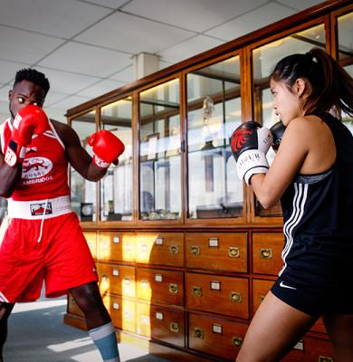

Modern issues
from a Classic view
Mary Beard says the Greeks and Romans have more to say about modern
society than we might think. A new set of films investigate how Classics can
help us explore modern issues like free speech, heroes and self-image.
 Museums
Research
Museums
Research
 Enterprise
Enterprise
 Alumni
Alumni
 Sport

Sport

News
Updates from across the University
Boat Race 2023
See who made it into the Cambridge Women's and Cambridge Men's crews for this year's Boat Race.
Researchers have developed an algorithm that uses computer vision techniques to accurately measure trees almost five times faster than traditional, manual methods.
Rewarding accuracy instead of partisan pandering reduces political divisions over the truth.
Events
Concerts,lectutures,sports events,festivals and more
.jpg) Lecture - Darwin College Lecture Series - to
Lecture - Darwin College Lecture Series - toFri 10 March
This year's topic is Isolation. Join for a unique opportuni
ty to hear experts in their field explore isolation from different angles, perspectives and disciplines.
March to Tue 25 April
A chance for you to experience undergraduate teaching
at the University of Cambridge. Join us at our Subject Masterclasses for students looking to apply in October 2023.
to Sun 2 April
Could a new theory of the Universe be Stephen Hawkings biggest legacy? How has popular music addressed political conflict? Are the big tech firms the new colonialists? Discover answers to these questions and more at this year's Cambridge Festival.